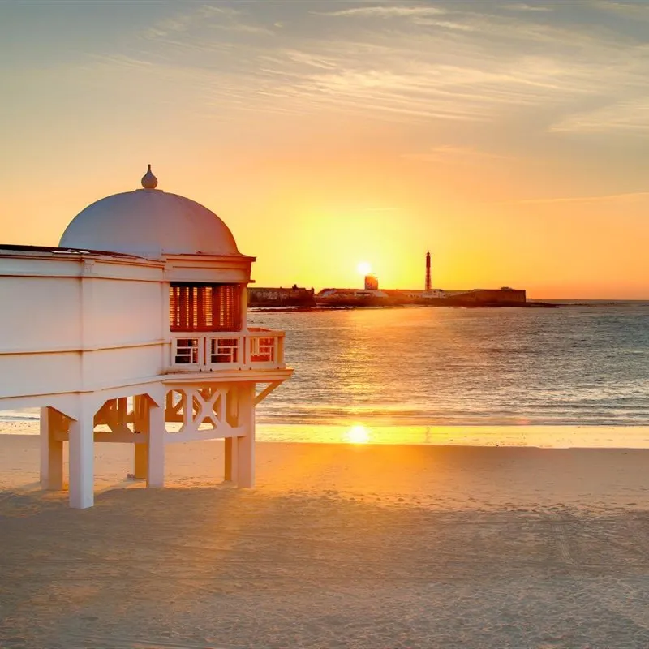
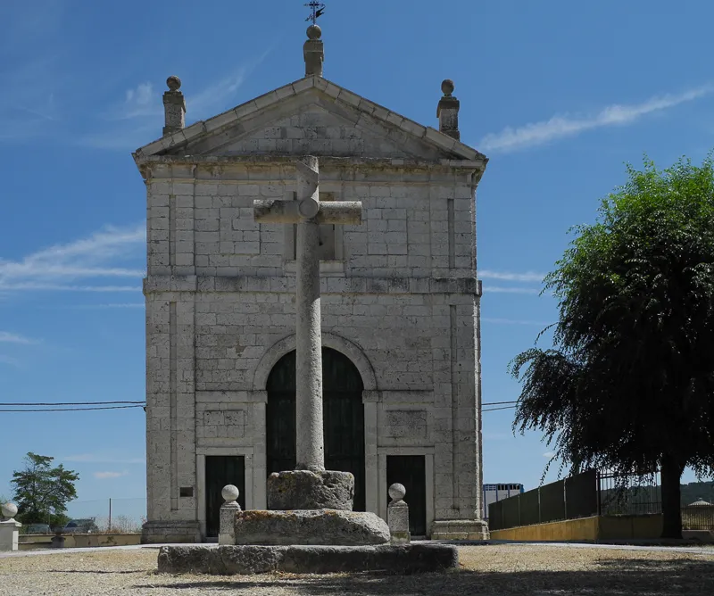
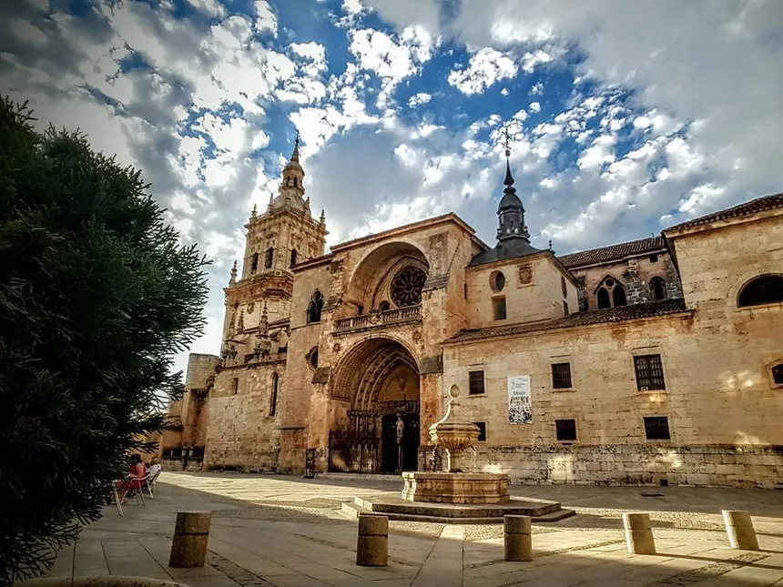

Cadiz
Cadiz
Cádiz es una ciudad y municipio español, capital de la provincia homónima, en la comunidad autónoma de Andalucía. Situada en el sur de la península ibérica, en el extremo suroccidental de la Europa continental.

Tudela de Duero
Tudela de Duero
Tudela de Duero es una localidad y municipio español de la provincia de Valladolid. A Tudela se la reconoce como "la alegre lágrima del duero" o "el oasis de Castilla", debido a que es un lugar con abundante vegetación y con un medio ambiente incomparable.

El Burgo De Osma
El Burgo De Osma
El Burgo de Osma es una localidad de la provincia de Soria. Esta catalogado como uno de los pueblos mas bonitos de España desde el año 2023 y petenece desde enotnces a la asociación homónima.